Disciplinas
-
SISTEMAS COMPUTACIONAIS. Concluído
Materiais
Vídeo 2 - 05 - Memória. sendProf° ministrante: Nilson Mori.
Conteúdo
Memória.
Memórias cache, memória principal e memória virtual.
Hierarquia de Memória.
Existem “vários tipos diferentes de dispositivos de armazenamento, cada um com características próprias e que, em conjunto, formam o que podemos chamar de um subsistema, organizado de forma hierárquica” [1].
https://pt.wikipedia.org/wiki/Hierarquia_de_mem%C3%B3ria#/media/Ficheiro:ComputerMemoryHierarchy.svg“A pirâmide em questão é projetada com uma base larga, que simboliza a elevada capacidade, o tempo de uso e o custo do componente que a representa" [1].
"Os principais parâmetros para análise das características de cada tipo de memória são: tempo de acesso, capacidade, volatilidade, tecnologia, temporariedade e custo" [1].
"Tempo de acesso – Indica quanto tempo a memória gasta para colocar na barra de dados após determinada posição ter sido endereçada” [1]. “É um dos parâmetros que pode medir o desempenho da memória” [1].
"Capacidade é a quantidade de informação que pode ser armazenada em uma memória; a unidade de medida mais comum éo byte" [1].
"Volatilidade – memórias - podem ser do tipo volátil ou não-volátil. Uma memória não volátil é a que retém a informação armazenada quando a energia elétrica é desligada" [1].
"Tecnologia de fabricação – ao longo do tempo, diversas tecnologias vêm sendo desenvolvidas para a fabricação de memórias" [1].
- São elas:
- Memória de semicondutores;
- Memória de meio magnético;
- Memória de meio ótico [1].
Registradores.
"Os registradores são pequenos espaços de memória utilizados pelo processador para armazenar informações que serão usadas para processar a instrução seguinte. Eles estão muito próximos das unidades de execução do processador e por isso as informações podem ser acessadas imediatamente, mas em troca eles são incrivelmente limitados em tamanho" [3].
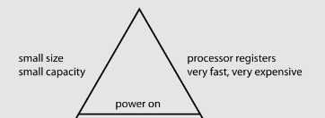Memória Cache.
"Um cache ou uma (memória) cache é um bloco de memória para o armazenamento temporário de dados que possuem grande probabilidade de serem utilizados novamente. Ou, de modo mais simples: uma área de armazenamento temporária onde os dados frequentemente acessados são armazenados para acesso mais rápido" [4].
Memória RAM.
"A sigla "RAM" vem de "Random Access Memory", ou "memória de acesso aleatório", indicando a principal característica da memória RAM, que é o fato de permitir o acesso direto a qualquer um dos endereços disponíveis e de forma bastante rápida" [3].
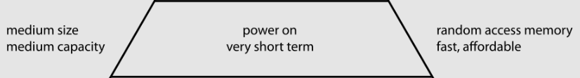Memória Principal.
“Também chamada de memória real, é a memória que o processador pode endereçar diretamente. Fornece uma ponte para as memórias secundárias, mas a sua função principal é a de conter a informação necessária para o processamento em determinado instante, como a instrução corrente do programa em execução. Aí se inserem as memórias RAM (voláteis), as ROM (não voláteis), os registradores e as memórias cache" [4].
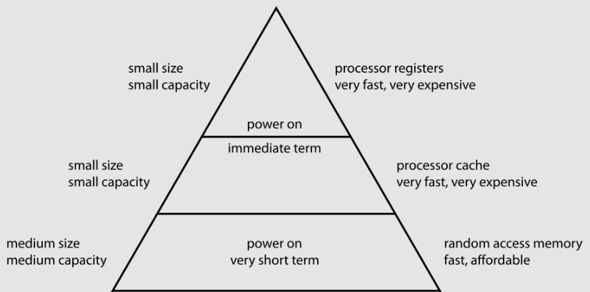Memória Flash.
"Memória Flash permite armazenar dados por longos períodos, sem precisar de alimentação elétrica. Graças a isso, a memória Flash se tornou rapidamente a tecnologia dominante em cartões de memória, pendrives, HDs de estado sólido (SSDs), memória de armazenamento em câmeras, celulares e palmtops e assim por diante" [3].
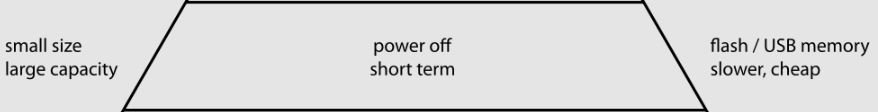Disco Rígido.
O HD (hard disk) "serve como unidade de armazenamento permanente, guardando dados e programas. O HD armazena os dados em discOS magnéticos que mantêm a gravação por vários anos. Os discos giram a uma grande velocidade e um conjunto de cabeças de leitura, instaladas em um braço móvel faz o trabalho de gravar ou acessar os dados em qualquer posição nos discos" [3].
DVD-ROM.
"DVD-ROM, Digital Versatile Disc - Read Only Memory, ou DVD (Disco de Video Digital) ROM (somente leitura)" [6].
"É é um formato de armazenamento de dados de disco óptico digital inventado e desenvolvido em 1995 e lançado no final de 1996. O meio pode armazenar qualquer tipo de dados digitais e foi amplamente utilizado para software e outros arquivos de computador, bem como programas de vídeo assistidos em reprodutores de DVD. Os DVDs oferecem maior capacidade de large very la armazenamento do que os discos compactos, embora tenham as mesmas dimensões" [6].
Memória Secundária.
“Memórias que não podem ser endereçadas diretamente: a informação precisa ser carregada em memória principal antes de poder ser tratada pelo processador. Não são estritamente necessárias para a operação do computador. São geralmente não voláteis, permitindo guardar os dados permanentemente. Incluem-se, nesta categoria, os discos rígidos, CDs, DVDse disquetes" [4].
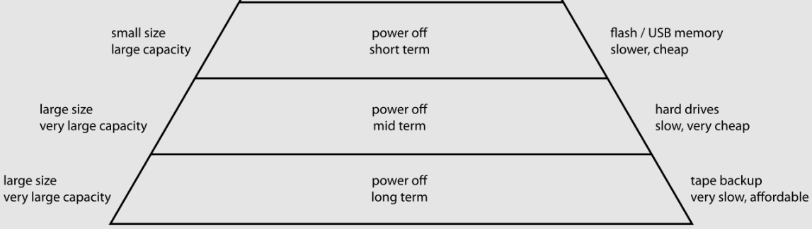Princípio da Localidade Temporal.
“Se em um ponto uma localização de memória particular for referenciada, então é provável que a mesma localização seja referenciada novamente em um futuro próximo. Há proximidade temporal entre referências adjacentes ao mesmo local de memória. Nesse caso, é comum fazer esforços para armazenar uma cópia dos dados referenciados em um armazenamento de memória mais rápido, para reduzir a latência das referências subsequentes” [7].
Memória Cache.
"A memória cache armazena os dados mais usados pelo processador, reduzindo o número de operações em que é preciso buscar dados diretamente na lenta memória RAM. Mesmo uma pequena quantidade de memória cache é capaz de melhorar bastante o desempenho do processador" [3].
https://www.researchgate.net/profile/Hamid-Reza-Faragardi/publication/337533696/figure/fig4/AS:829424706527242@1574761668654/represents-a-sample-of-such-an-architecture-with-four-processing-cores-It-should-be.ppm 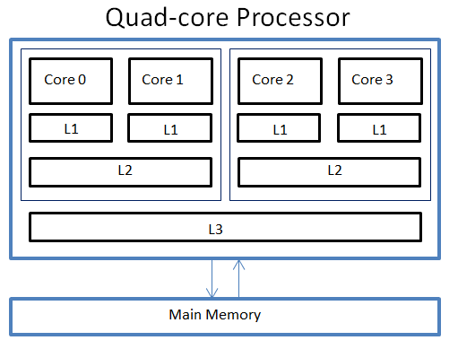“Uma pequena porção de memória estática presente dentro do processador. Em alguns tipos de processador, como o Pentium 2, a L1 é dividida em dois níveis: dados e instruções. A partir do Intel 486, começou-se a colocar a L1 no próprio chip (processador)" [4].
"Possuindo a cache L1 um tamanho reduzido e não se apresentando como solução ideal, foi desenvolvido a cache L2, que contém muito mais memória que o cache L1. É mais um caminho para que a informação requisitada não tenha que ser procurada na lenta memória principal" [4].
"Pentium II, por exemplo, cujas caches L1 e L2 estão no mesmo cartucho onde se encontra o processador" [4].
"Terceiro nível de cache de memória. Inicialmente utilizado pelo AMD K6-III” [4].
Memória RAM.
"O chip de memória em si serve apenas para armazenar dados, não realiza nenhum tipo de processamento. Por isso, é utilizado um componente adicional, o controlador de memória, que pode ser incluído tanto no chipset da placa- mãe quanto dentro do próprio processador..." [3].
https://speedy.uenicdn.com/eeb6039f-84dc-4dc4-a69f-f72baaa5f0f4/c480_a/image/upload/v1579801578/business/e5769bc8-474c-4850-9f31-22e1ec43f872.webp 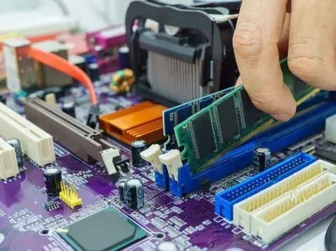"SRAM (static RAM).
Extremamente rápida e de baixo consumo de energia. Uma vez carregada, informações são mantidas com um mínimo de energia de alimentação. Embora volátil como a memória dinâmica, não exige que a CPU renove o seu conteúdo centenas de vezes por segundo. Só perde o conteúdo se a máquina for desligada. Seu alto preço torna-a inviável economicamente em grandes quantidades. É utilizada principalmente nas chamadas memórias cache e é construída com circuitos do tipo FLIP-FLOP" [4].
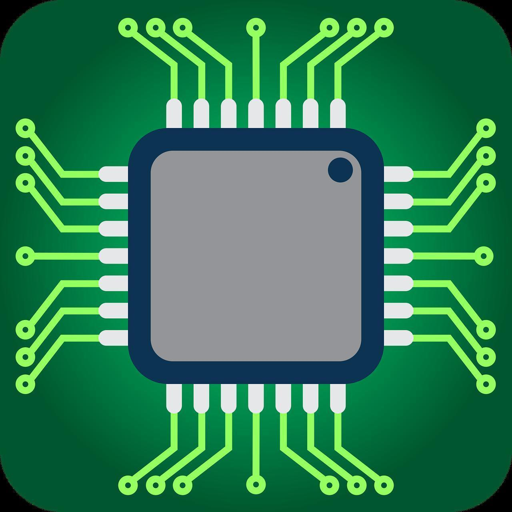Memória DRAM.
“DRAM (dinamic RAM). Chip de memória que armazena cargas elétricas em capacitores. Como os capacitores paulatinamente vão perdendo a carga, o conteúdo dos chips DRAM precisa ser continuamente renovado, o que justifica o nome "dinâmico”. A essa renovação se dá o nome de refresh" [4].
"Em certos casos, retarda o funcionamento dos microprocessadores mais modernos. Daí, o uso das memórias estáticas para determinados fins" [4].

Memória Regular.
"Para acessar um determinado endereço de memória, o controlador primeiro gera o valor RAS (Row Address Strobe), ou o número da linha da qual o endereço faz parte, gerando em seguida o valor CAS (Column Address Strobe), que corresponde à coluna" [3].
https://upload.wikimedia.org/wikipedia/commons/thumb/f/fe/L%27int%C3%A9rieur_d%27une_FPM.png/800px-L%27int%C3%A9rieur_d%27une_FPM.png?20160525184232 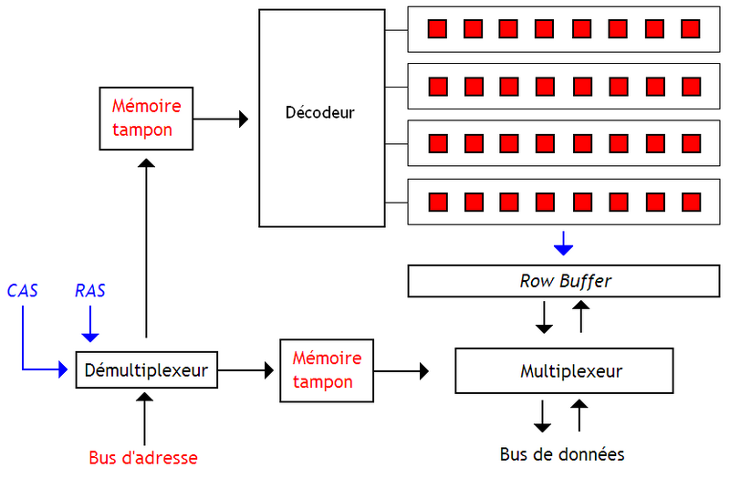"Quando o RAS é enviado, toda a linha é ativada simultaneamente; depois de um pequeno tempo de espera, o CAS é enviado, fechando o circuito e fazendo com que os dados do endereço selecionado sejam lidos ou gravados" [4].
"Isso funcionava bem nos micros XT e 286, onde o clock do processador era muito baixo, de forma que a memória RAM era capaz de funcionar de forma sincronizada com ele" [4].
“A primeira melhora significativa na arquitetura das memórias veio com o FPM (Fast-Page Mode, ou "modo de paginação rápida")" [4].
Princípio da Localidade Espacial.
"Se um determinado local de armazenamento for referenciado em um determinado momento, é provável que os locais de memória próximos sejam referenciados em um futuro próximo. Nesse caso, é comum tentar adivinhar o tamanho e a forma da área em torno da referência atual, para a qual vale a pena preparar um acesso mais rápido para referência subsequente” [7].
Memória FPM.
"As memórias FPM foram utilizadas em micros 386, 486 e nos primeiros micros Pentium, na forma de módulos SIMM de 30 ou 72 vias" [4].
https://upload.wikimedia.org/wikipedia/commons/thumb/f/fe/L%27int%C3%A9rieur_d%27une_FPM.png/800px-L%27int%C3%A9rieur_d%27une_FPM.png?20160525184232"A ideia é que, ao ler um bloco de instruções ou arquivo gravado na memória, os dados estão quase sempre gravados sequencialmente Não seria preciso então enviar o endereço RAS e CAS para cada bit a ser lido, mas simplesmente enviar o endereço RAS (linha) uma vez e em seguida enviar uma sequência de até 4 endereços CAS (coluna), realizando uma série rápida de 4 leituras" [4].
Memória EDO.
"As memórias EDO (Extended Data Output) foram introduzidas a partir de 1994 e trouxeram mais uma melhoria significativa no modo de acesso a dados. Nas memórias FPM, uma leitura não pode ser iniciada antes que a anterior termine, mesmo dentro do burst de 4 leituras dentro da mesma linha" [4].
https://upload.wikimedia.org/wikipedia/commons/thumb/f/fe/L%27int%C3%A9rieur_d%27une_FPM.png/800px-L%27int%C3%A9rieur_d%27une_FPM.png?20160525184232"Nas memórias EDO, o controlador faz a leitura enviando o endereço RAS, como de costume, e depois enviando os 4 endereços CAS numa frequência predefinida, sem precisar esperar que o acesso anterior termine. Os sinais chegam às células de memória na sequência em que foram enviados e, depois de um pequeno espaço de tempo, o controlador recebe de volta as 4 leituras" [4].
Memória SDRAM.
"Tanto as memórias FPM quanto as memórias EDO são assíncronas, o que significa que elas trabalham em seu próprio ritmo, independentemente dos ciclos da placa-mãe" [4].
"As memórias SDRAM (Synchronous Dynamic RAM) por sua vez, são capazes de trabalhar sincronizadas com os ciclos da placa-mãe, sem tempos de espera. Isso significa que a temporização das memórias SDRAM é sempre de uma leitura por ciclo" [4]
https://player.slideplayer.com.br/11/3395540/data/images/img12.jpg 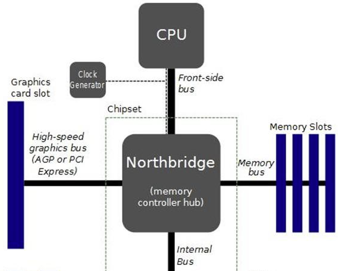"As memórias passaram então a ser rotuladas de acordo com a frequência em que são capazes de operar. No caso das memórias SDRAM temos as memórias PC-66, PC-100 e PC-133" [4]
"Apesar das otimizações, os módulos de memória SDRAM continuam realizando apenas uma transferência por ciclo, da forma mais simples possível. Depois de decorrido o longo ciclo inicial, as células de memória entregam uma leitura de dados por ciclo, que passa pelos buffers de saída e é despachada através do barramento de dados. Todos os componentes trabalham na mesma frequência:" [4]
Memória DDR SDRAM
"As memórias DDR implementam um novo truque, que as torna capazes de realizarem duas transferências por ciclo e serem quase duas vezes mais rápidas que as memórias SDRAM, mesmo mantendo a mesma frequência de operação e a mesma tecnologia básica. Vem daí o termo "DDR", que significa "Double Data Rate", ou duplo fluxo de dados." [4]
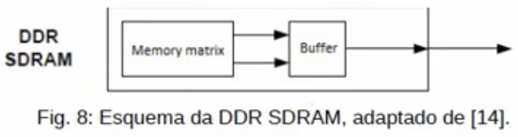"as células de memória propriamente ditas continuam operando na mesma frequência Em um módulo DDR-266, por exemplo, elas operam a apenas 133 MHz, da mesma forma que num módulo PC-133. O pulo do gato é fazer com que cada um dos dois comandos de leitura (ou gravação) sejam enviados para um endereço diferente, na mesma linha." [4]
"Os módulos DDR podem ser vendidos tanto segundo sua freqüência de operação quanto segundo sua taxa de transferência." [4]
- DDR-200 (100 MHz) = PC1600
- DDR-266 (133 MHz) = PC2100
- DDR-333 (166 MHz) = PC2700
- DDR-400 (200 MHz) = PC3200
- DDR-466 (233 MHz) = PC3700
- DDR-500 (250 MHz) = PC4000
Memória DDR2.
"Seguindo a tendência inaugurada pelas memórias DDR, as DDR2 novamente duplicam a taxa de transferência, realizando agora 4 operações por ciclo. Novamente, as células de memória continua trabalhando na mesma freqüência anterior e o acesso inicial continu demorando aproximadamente o mesmo tempo. Entretanto, as demais operações dentro do burst passam a ser realizadas em apenas um quarto de ciclo de clock." [4]
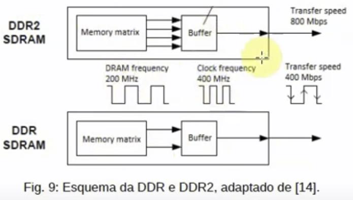Memória DDR3.
https://image.slidesharecdn.com/memoriasedoddr12e3edualchannel-120426152632-phpapp02/75/Memorias-edo-ddr-1-2-e-3-e-dual-channel-21-2048.jpg 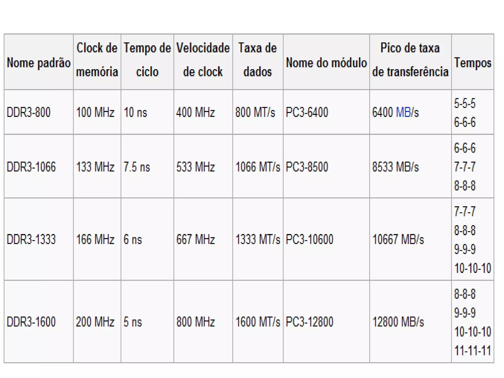 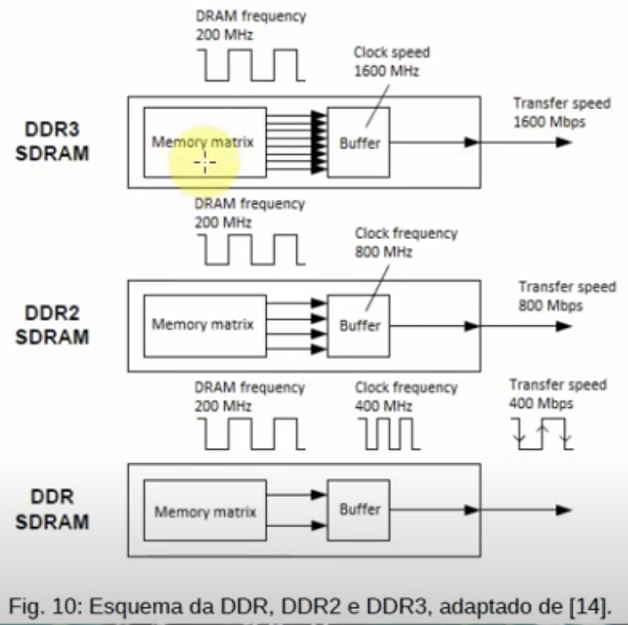Memória DDR4.
https://www.elinfor.com/article/0/2/02-DDR4%20Moudle.jpg 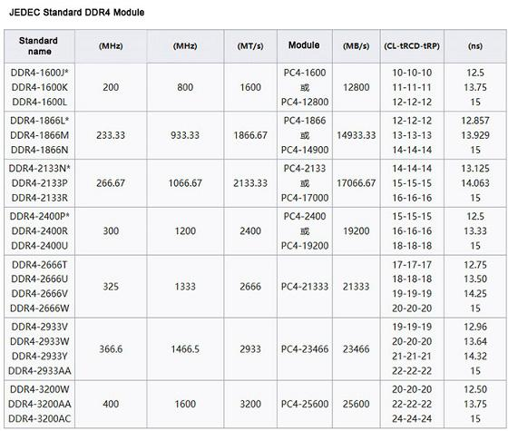Bibliografia.
- [1] Monteiro, Mário A. Introdução à organização de computadores. Brasil, Grupo Gen - LTC, 2007.
- [2] Wikipédia (2019). Hierarquia da memória. Wikipédia, a enciclopédia livre. https://pt.wikipedia.org/w/index.php? title=Hierarquia_da_mem%C3%B3ria&oldid=56148088, [accessed on Aug 27].
- [3] MORIMOTO, Carlos Eduardo. Hardware II, o guia definitivo. Porto Alegre: Sul Editores, 2010.
- [4] VELLOSO, Fernando de Castro. Informática: conceitos básicos, vol. 9. Elsevier Brasil, 2014.
- 5] Wikipédia (2021). CD-ROM. Wikipédia, a enciclopédia livre. https://pt.wikipedia.org/w/index.php?title=CD-ROM&oldid=61744446. [
- [6] Wikipedia contributors (2021). DVD. Wikipedia, The Free Encyclopedia. https://en.wikipedia.org/w/index.php? title=DVD&oldid=1040789075.
- [7] Wikipedia contributors (2021). Locality of reference. Wikipedia, The Free Encyclopedia. https://en.wikipedia.org/w/index.php? title=Locality_of_reference&oldid=1038395377.
- [8] Faragardi, Hamid Reza & Lisper, Björn & Sandström, Kristian & Nolte, Thomas. (2015). A communication-aware solution framework for mapping AUTOSAR runnables on multi-core systems. 19th IEEE International Conference on Emerging Technologies and Factory Automation, ETFA 2014. 10.1109/ETFA.2014.7005244.
- [9] https://www.pxfuel.com/pt/free-photo-iyajj
- [10] https://commons.wikimedia.org/wiki/File:L'int%C3%A9rieur_d'une_FPM.png
- [11] https://en.wikipedia.org/wiki/Northbridge_(computing)
- [12] https://www.maxpixel.net/Technology-Chip-Board-Ic-Electronics-Circuit-5115478 [13] https://www.maxpixel.net/Chip-Microchip-Memory-Ram-Circuit-Electronic-38404
- [14] https://en.bmstu.wiki/File:DDR3_Frequency_en.png
- [15] https://pt.wikipedia.org/wiki/DDR3_SDRAM [16] https://en.wikipedia.org/wiki/DDR4_SDRAM
- [17] https://www.samsung.com/semiconductor/dram/ddr5/